library(tidyverse)
library(dslabs)
head(heights) sex height
1 Male 75
2 Male 70
3 Male 68
4 Male 74
5 Male 61
6 Female 65We will study self reported heights from studnets from past classes:
library(tidyverse)
library(dslabs)
head(heights) sex height
1 Male 75
2 Male 70
3 Male 68
4 Male 74
5 Male 61
6 Female 65The most basic statistical summary of a list of objects or numbers is its distribution.
prop.table(table(heights$sex))
Female Male
0.2266667 0.7733333 Here is the distribution for the regions in the murders dataset:
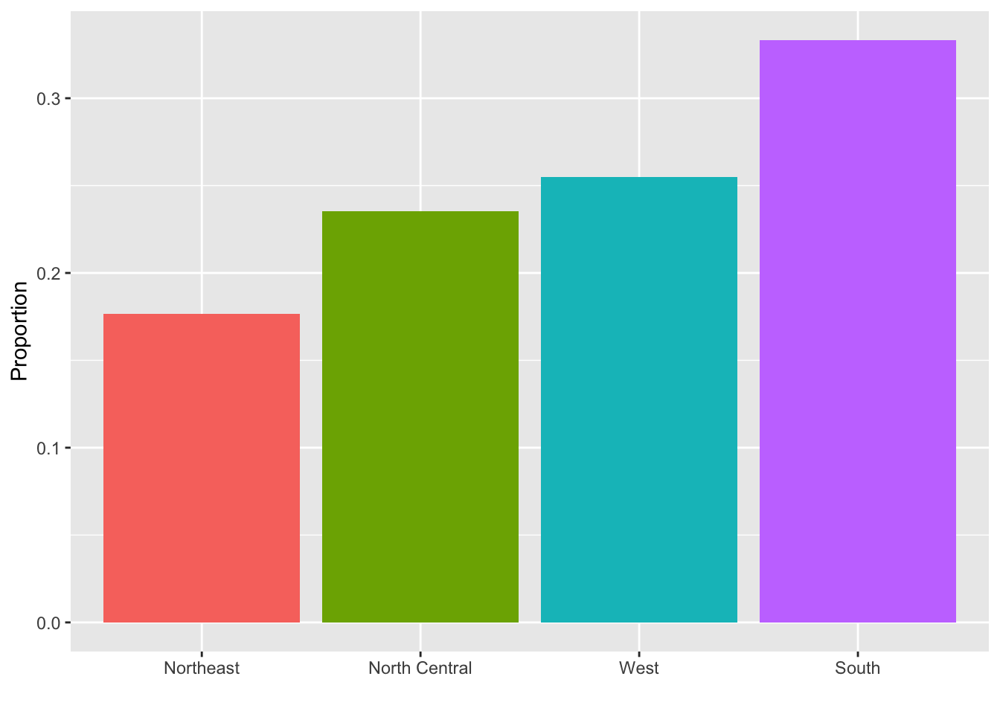
Cumulative distributions function shows everything you need to know the distribution.
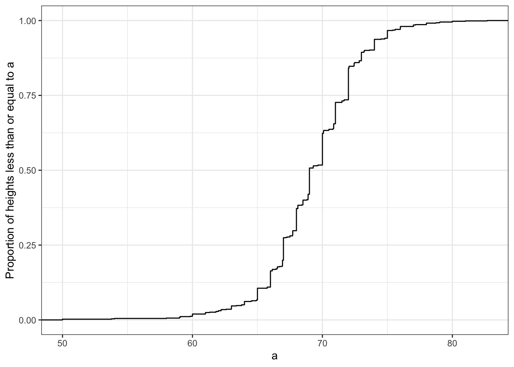
Histograms lose a bit fo information but are easier to read:
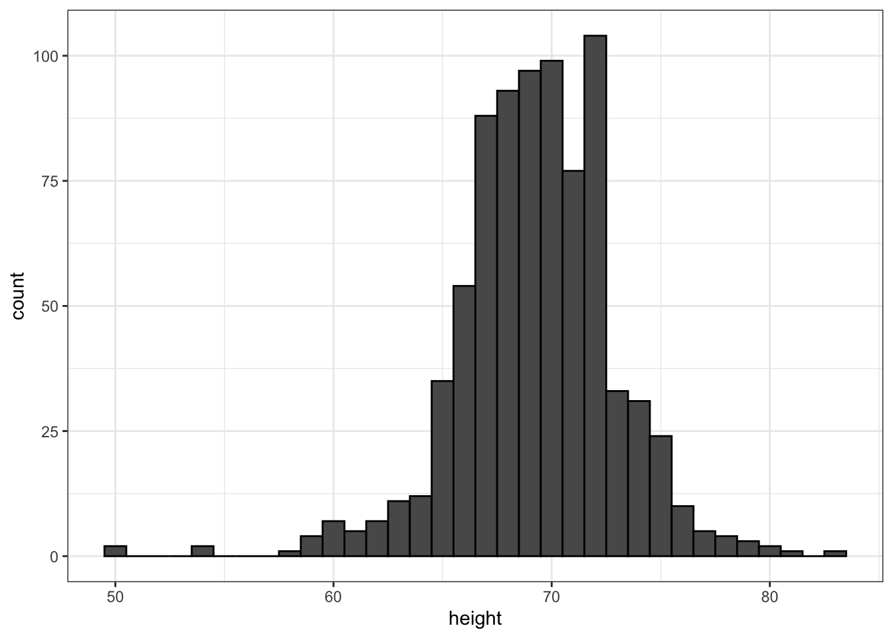
Smooth density plots relay the same information as a histogram but are aesthetically more appealing. Here is what a smooth density plot looks like for our heights data:
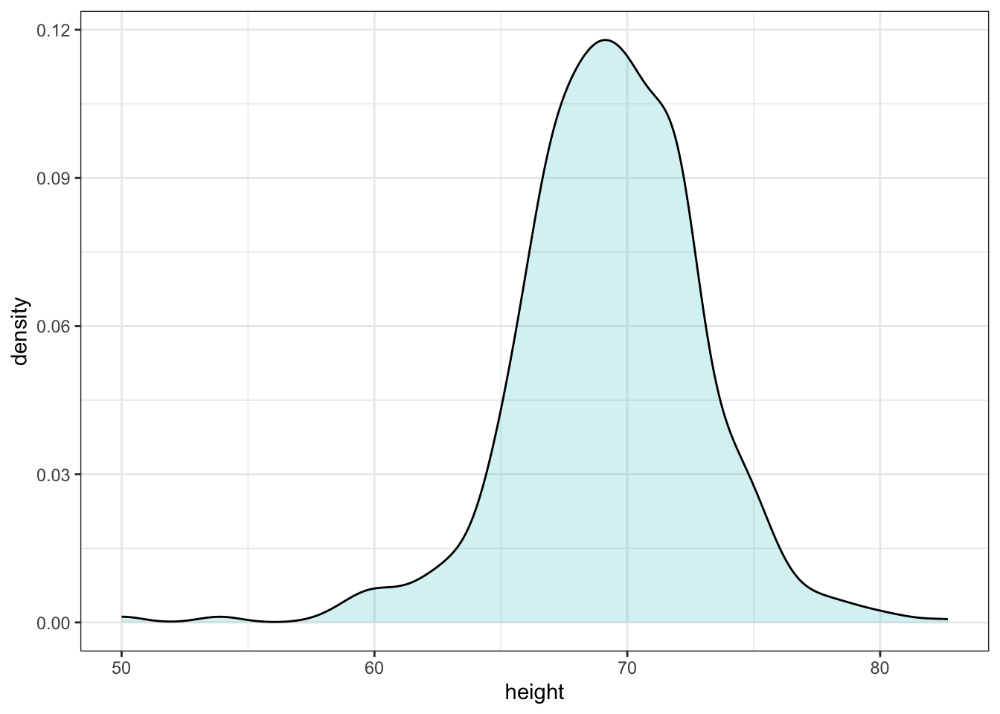
An advantage is that it is easy to show more than one:
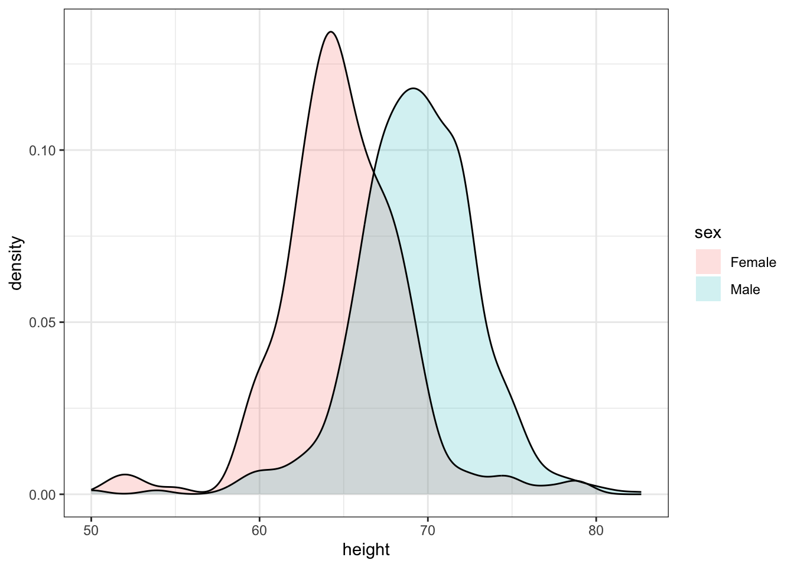
With the right argument, ggplot automatically shades the intersecting region with a different color.
The normal distribution, also known as the bell curve and as the Gaussian distribution. Here is what the normal distribution looks like:
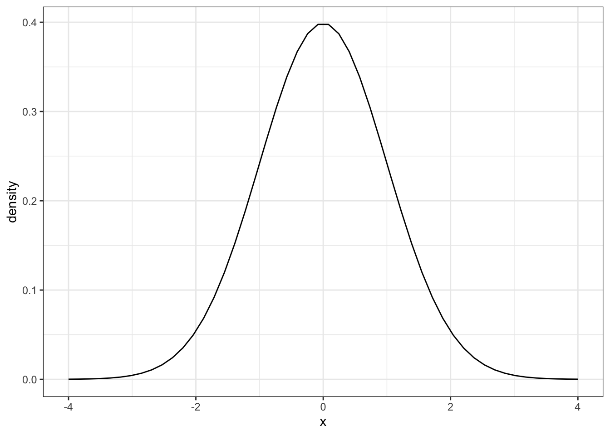
A useful characteristic of the normal distribution is that it is defined by just two numbers: the average (also called mean) and the standard deviation.
So for the male height data we can define the average of standard deviation like this:
index <- heights$sex == "Male"
x <- heights$height[index]
m <- sum(x) / length(x)
s <- sqrt(sum((x - mu)^2)/length(x))The pre-built functions mean and sd can be used here: :::
m <- mean(x)
s <- sd(x)
c(average = m, sd = s) average sd
69.314755 3.611024 The pre-built functions mean and sd (note that, for reasons explained in statistics textbooks,sd divides by length(x)-1 rather than length(x)) can be used here:
Here is a plot of the smooth density and the normal distribution with mean = 69.3 and SD = 3.6 plotted as a black line with our student height smooth density in blue:
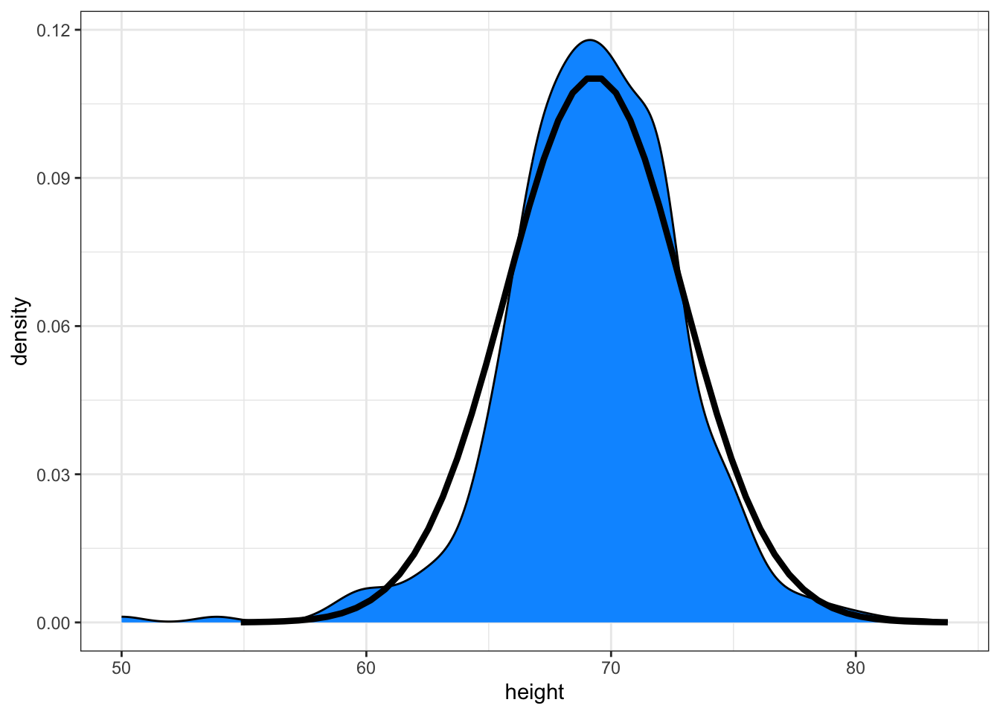
Boxplots provide a five number summary (and shows outliers):
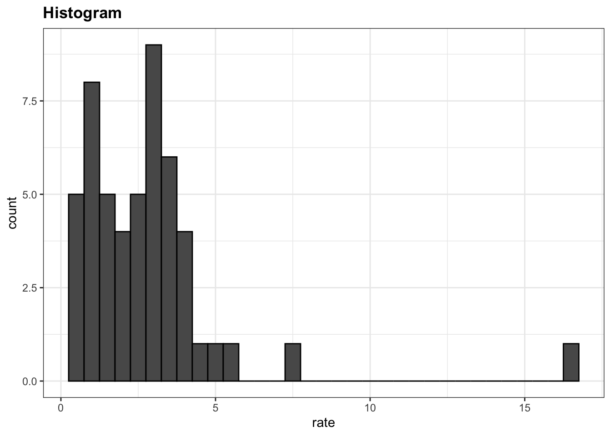
In this case, the histogram above or a smooth density plot would serve as a relatively succinct summary.
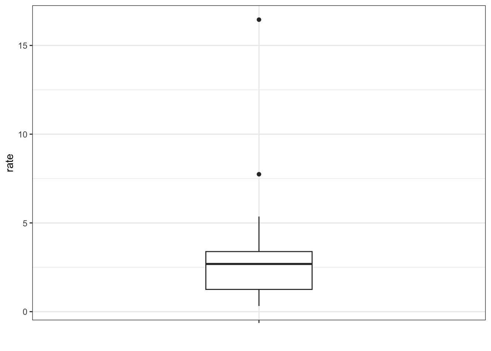
Showing conditional distributions is often very informative
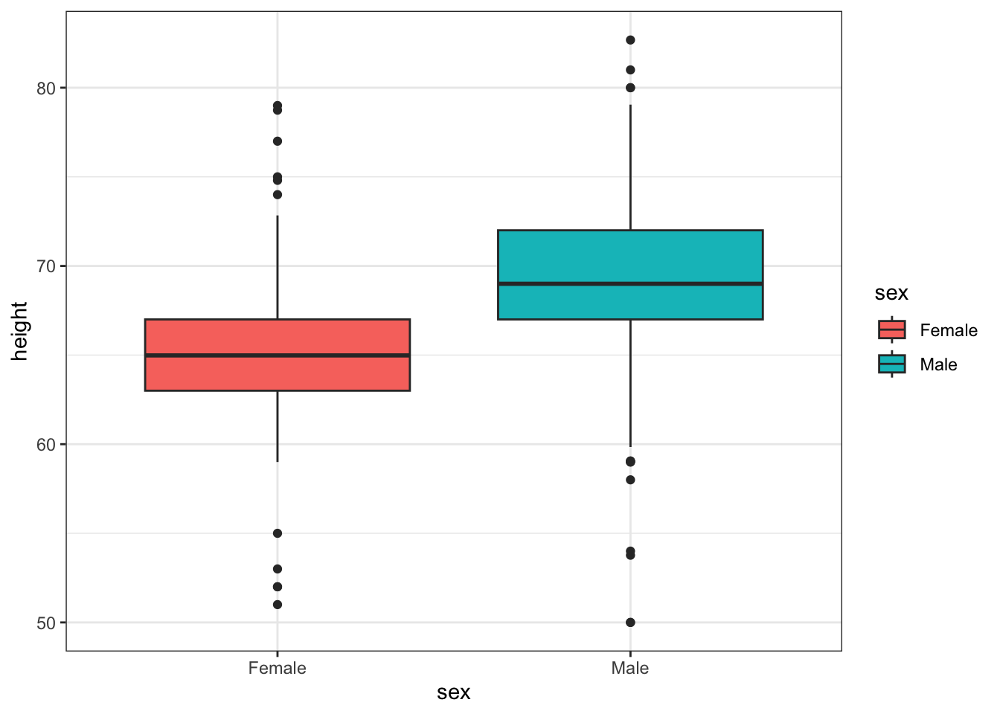
We also see the normal approximation might not be useful for females:
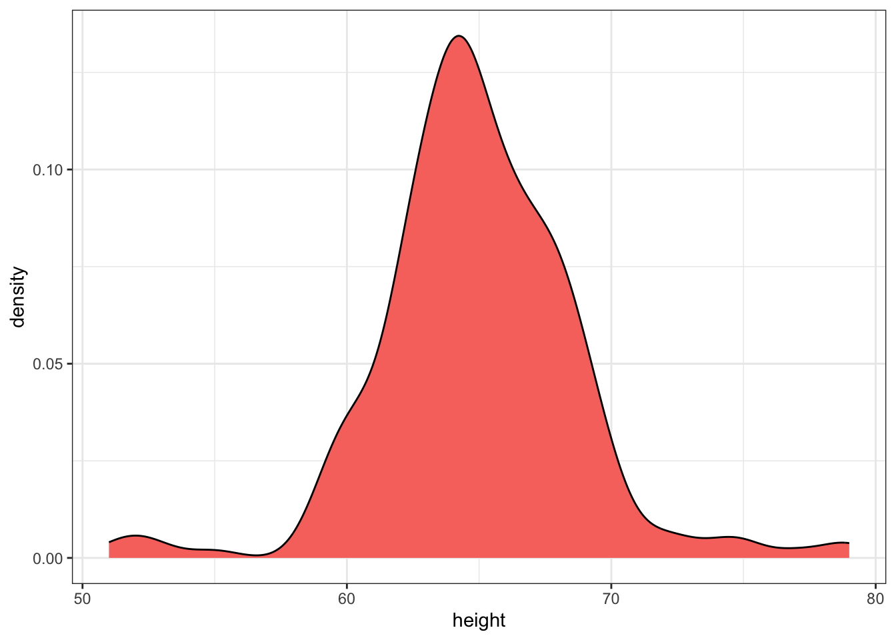
Regarding the five smallest values, note that these values are:
heights |> filter(sex == "Female") |>
top_n(5, desc(height)) |>
pull(height)[1] 51 53 55 52 52Because these are reported heights, a possibility is that the student meant to enter 5'1", 5'2", 5'3" or 5'5".
Suppose we can’t make a plot and want to compare the distributions side by side. We can’t just list all the numbers. Instead, we will look at the percentiles. Create a five row table showing female_percentiles and male_percentiles with the 10th, 30th, 50th, 70th, & 90th percentiles for each sex. Then create a data frame with these two as columns.
Study the following boxplots showing population sizes by country:
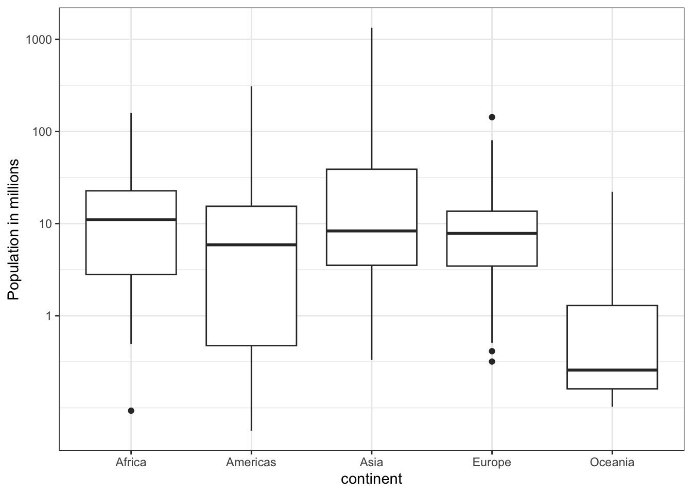
Which continent has the country with the biggest population size?
What continent has the largest median population size?
What is median population size for Africa to the nearest million?
What proportion of countries in Europe have populations below 14 million?
If we use a log transformation, which continent shown above has the largest interquartile range?
Load the height data set and create a vector x with just the male heights:
library(dslabs)
x <- heights$height[heights$sex=="Male"]What proportion of the data is between 69 and 72 inches (taller than 69, but shorter or equal to 72)? Hint: use a logical operator and mean.